Reconstituição editorial
A Finlândia não existe?
A família teria ensinado que a Finlândia era falsa.
Paráfrase em português • não é captura nem citação literal.


A Finlândia...
É a teoria deste caso
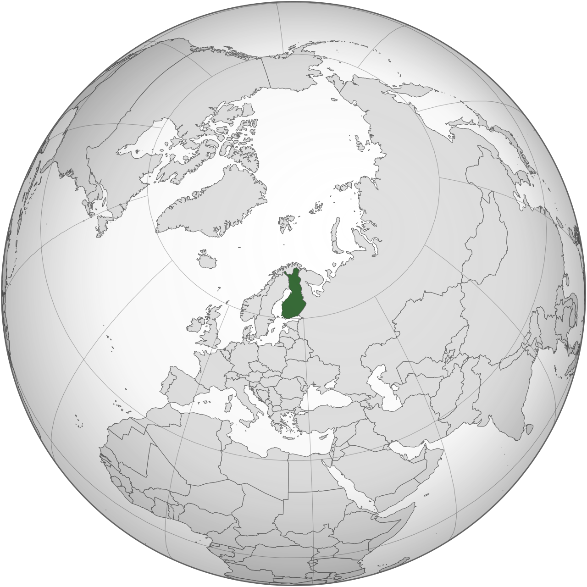
Um país inventado? (segundo a teoria)
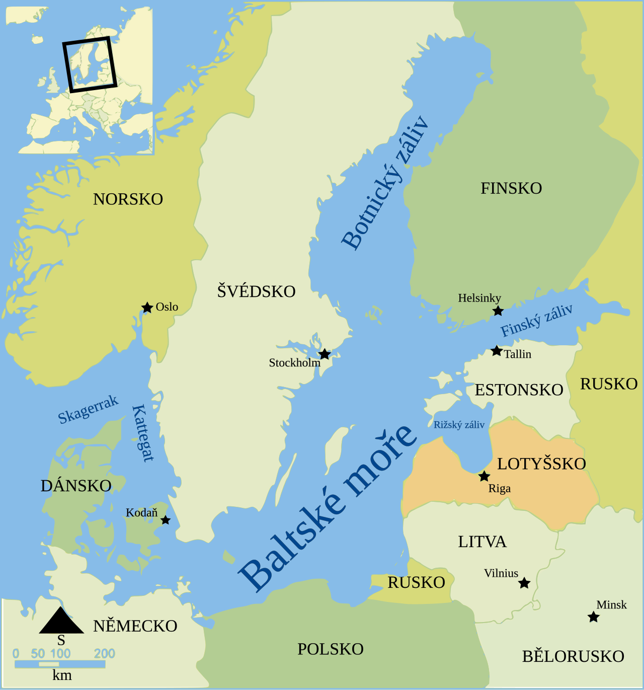
A região no mapa...
Pavouk • CC BY-SA 4.0
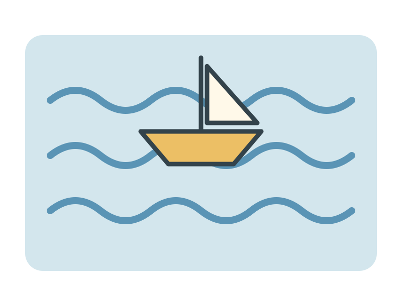
...seria mar?
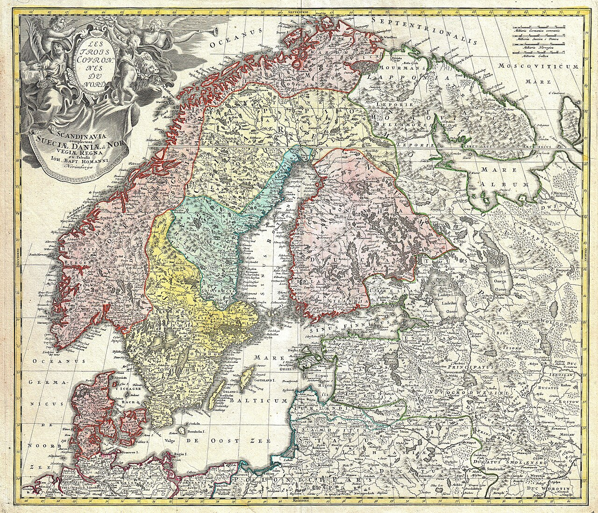
A terra seria dos vizinhos?
Johann Homann • Public domain
Paráfrase em português • não é captura nem citação literal.
Uma história que nasceu na internet
A piada se espalhou
Segundo a teoria
Um suposto acordo secreto
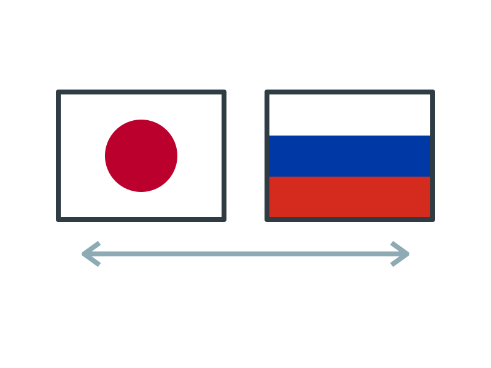
Japão + Rússia
No lugar do país... mar aberto?
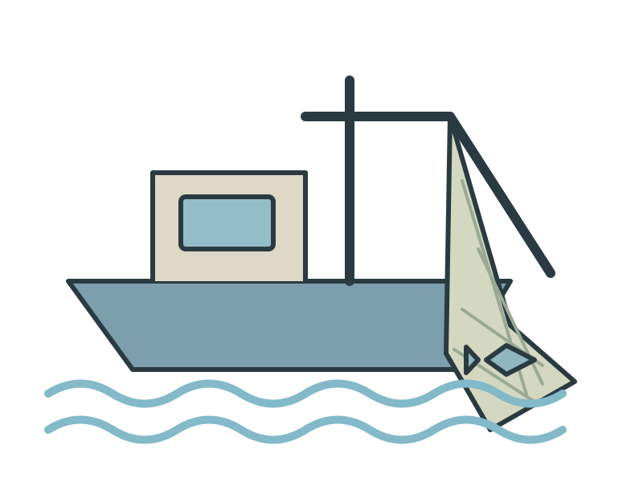
Operações de pesca escondidas?
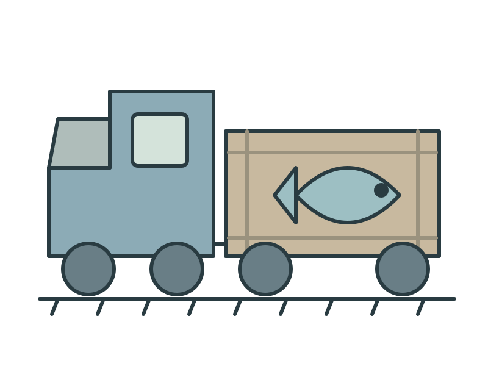
Peixes transportados em segredo?
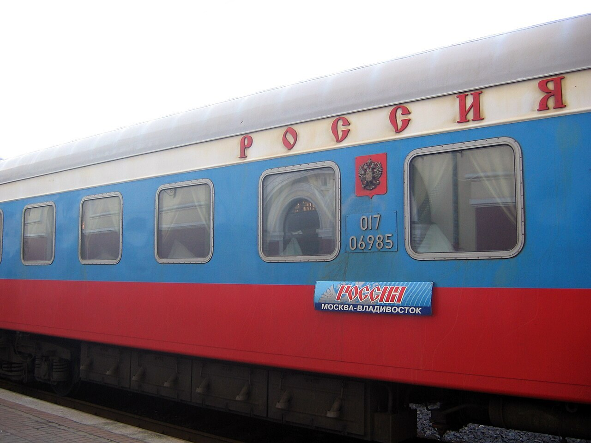
Ferrovia Transiberiana
Transiberiana • CC BY-SA 3.0
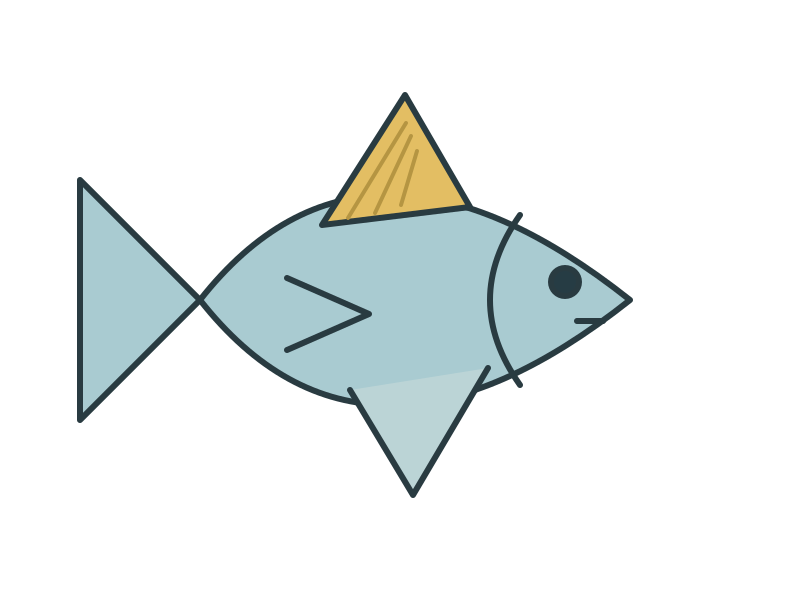
Até o nome entrou na história
Um trocadilho em inglês
A história transformava o país em oceano
Mar em vez de terra?
Sátira ou crença?
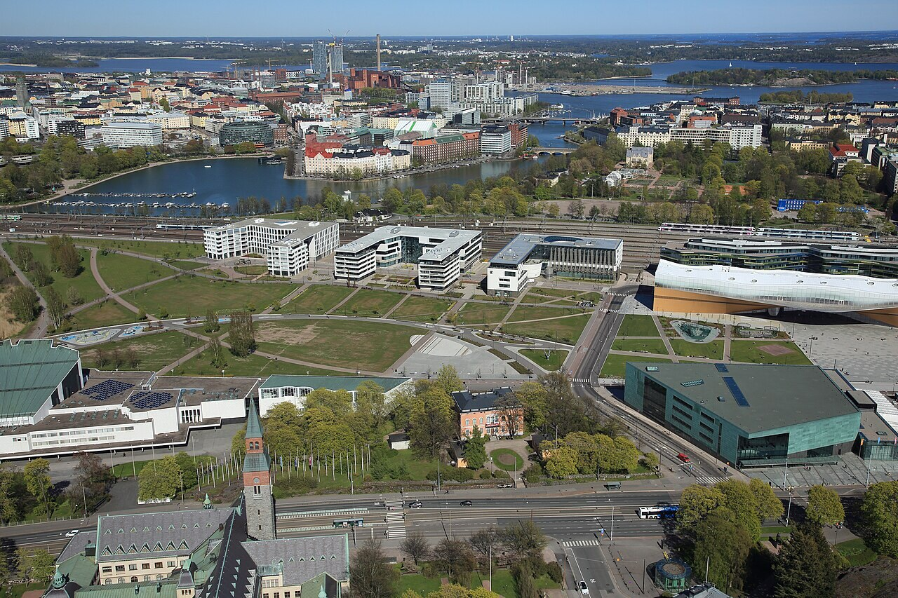
Helsinki • Finlândia
Helsinki • Suomen Ilmakuva OY • CC BY 4.0
Sim, um país real
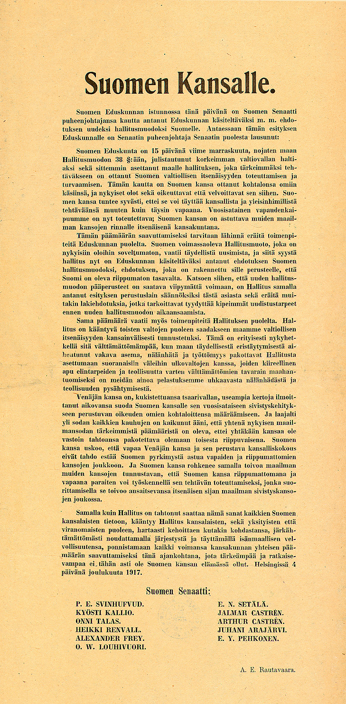
História documentada
Senate of Finland • Public domain
Governo
Diego Delso • CC BY-SA 3.0
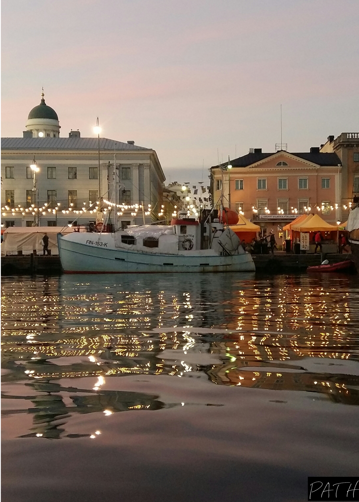
População
Halt tone • CC BY-SA 4.0
Fronteiras reconhecidas